Displaying tables as grid graphics
Baptiste Auguie
2022-12-11
tableGrob.rmdTabular data is usually formatted outside the graphics device, e.g
via LaTeX, or html tables. However, in some cases it may be convenient
to display small tables alongside graphics. A couple of
packages offer this possibility with base graphics (plotrix
for instance); the gridExtra provides the pair of
tableGrob/grid.table functions for this purpose.
Note: This vignette uses the development version of
gridExtra, some features may not be yet available in the
released version.
Spacing
The spacing of each row/column is automatic, and will adjust to
bigger cell contents. Plotmath notation may be used, with the
parse=TRUE argument. Note that this is applied to
individual strings of text, and reverts to standard text if parsing
fails (this is useful when mixing multiline text with plotmath in
different cells).
d[2,3] <- "this is very wwwwwide"
d[1,2] <- "this\nis\ntall"
colnames(d) <- c("alpha*integral(xdx,a,infinity)",
"this text\nis high", 'alpha/beta')
tt <- ttheme_default(colhead=list(fg_params = list(parse=TRUE)))
grid.table(d, theme=tt)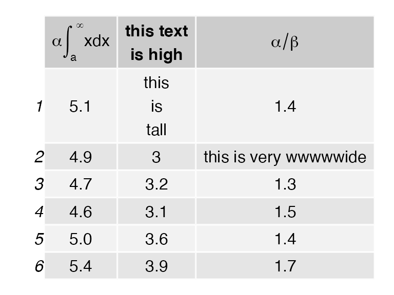
Aesthetic formatting
The formatting is controlled by themes, which are nested
lists of graphical parameters. See ttheme_default and
ttheme_minimal for two built-in examples. Changing a few
parameters at a time amounts to modifying the list with the new
values.
tt1 <- ttheme_default()
tt2 <- ttheme_minimal()
tt3 <- ttheme_minimal(
core=list(bg_params = list(fill = blues9[1:4], col=NA),
fg_params=list(fontface=3)),
colhead=list(fg_params=list(col="navyblue", fontface=4L)),
rowhead=list(fg_params=list(col="orange", fontface=3L)))
grid.arrange(
tableGrob(iris[1:4, 1:2], theme=tt1),
tableGrob(iris[1:4, 1:2], theme=tt2),
tableGrob(iris[1:4, 1:2], theme=tt3),
nrow=1)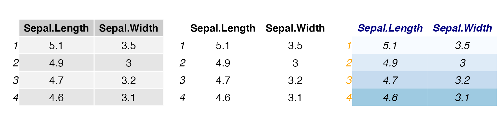
If the formatting values are fewer than the number of cells, they are recycled along columns,
t1 <- ttheme_default(core=list(
fg_params=list(fontface=c(rep("plain", 4), "bold.italic")),
bg_params = list(fill=c(rep(c("grey95", "grey90"),
length.out=4), "#6BAED6"),
alpha = rep(c(1,0.5), each=5))
))
grid.table(iris[1:5, 1:3], theme = t1)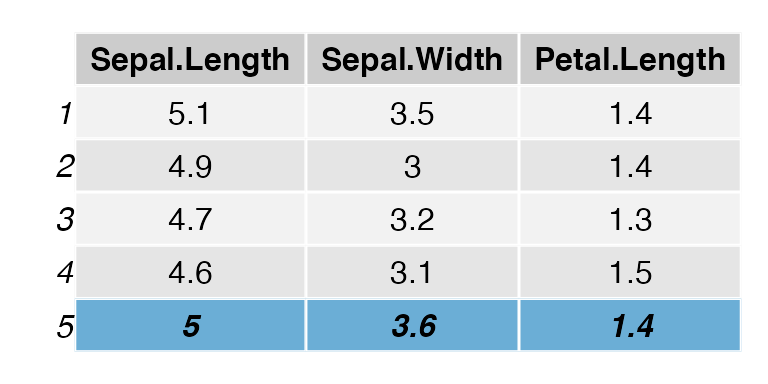
Text justification
The text labels can be justified; the default is “centre” for the
core and header, and “right” for the row names. These settings can be
adjusted by passing the relevant parameters of textGrob via
the theme nested lists,
tt1 <- ttheme_default()
tt2 <- ttheme_default(core=list(fg_params=list(hjust=1, x=0.9)),
rowhead=list(fg_params=list(hjust=1, x=0.95)))
tt3 <- ttheme_default(core=list(fg_params=list(hjust=0, x=0.1)),
rowhead=list(fg_params=list(hjust=0, x=0)))
grid.arrange(
tableGrob(mtcars[1:4, 1:2], theme=tt1),
tableGrob(mtcars[1:4, 1:2], theme=tt2),
tableGrob(mtcars[1:4, 1:2], theme=tt3),
nrow=1)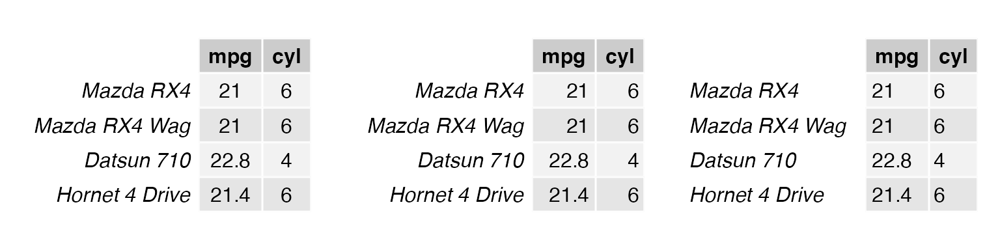
Further gtable processing and integration
Being based on gtable, the table can be further
processed. In particular, we may edit the cell sizes to align with other
content on the page.
g <- g2 <- tableGrob(iris[1:4, 1:3], cols = NULL, rows=NULL)
g2$widths <- unit(rep(1/ncol(g2), ncol(g2)), "npc")
grid.arrange(rectGrob(), rectGrob(), nrow=1)
grid.arrange(g, g2, nrow=1, newpage = FALSE)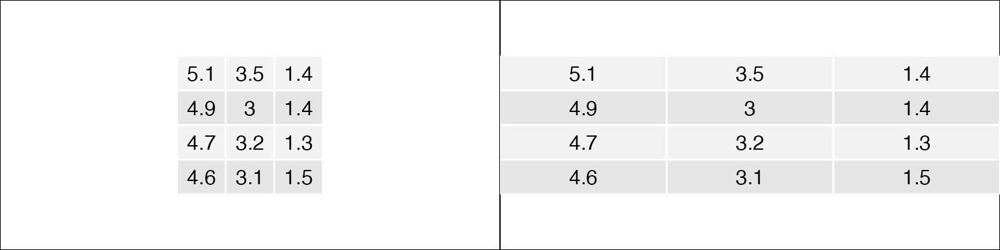
The alignment of several tables can be achieved with the
combine function (adapted from
gtable:::join),
d1 <- PlantGrowth[1:3,1, drop=FALSE]
d2 <- PlantGrowth[1:2,1:2]
g1 <- tableGrob(d1)
g2 <- tableGrob(d2)
haligned <- gtable_combine(g1,g2, along=1)
valigned <- gtable_combine(g1,g2, along=2)
grid.newpage()
grid.arrange(haligned, valigned, ncol=2)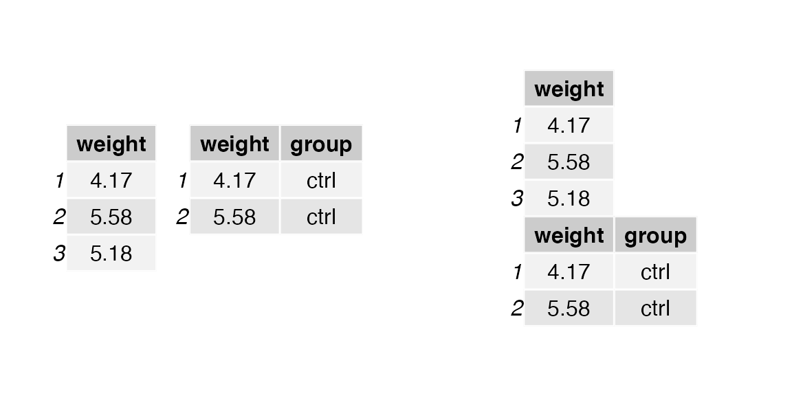
Borders and separators
Other grobs such as separating lines and rectangles (borders, boxes)
may be added. In this case, keep in mind that row, column and cell
numbering includes the column of row labels and the row of column labels
if they are present. Let us illustrate this by adding some
borders (using rectGrob) to a simple table without row
numbers. We’ll add two actually, to give a nice effect of a heavy line
under the row of column headers.
library(gtable)
g <- tableGrob(iris[1:4, 1:3], rows = NULL)
g <- gtable_add_grob(g,
grobs = rectGrob(gp = gpar(fill = NA, lwd = 2)),
t = 2, b = nrow(g), l = 1, r = ncol(g))
g <- gtable_add_grob(g,
grobs = rectGrob(gp = gpar(fill = NA, lwd = 2)),
t = 1, l = 1, r = ncol(g))
grid.draw(g)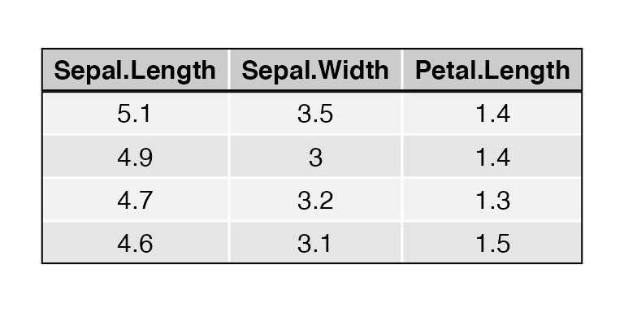
Note that when using rectGrob the top, bottom, left and
right arguments (t, b, l, r) are the rows and columns which
will be inside the rectangle. If we repeat the above code
almost exactly, but don’t suppress the column of row labels, we see that
column 1 is now the column of row labels (and it doesn’t look that good
either, but that’s not our point).
g <- tableGrob(iris[1:4, 1:3])
g <- gtable_add_grob(g,
grobs = rectGrob(gp = gpar(fill = NA, lwd = 2)),
t = 2, b = nrow(g), l = 1, r = ncol(g))
g <- gtable_add_grob(g,
grobs = rectGrob(gp = gpar(fill = NA, lwd = 2)),
t = 1, l = 1, r = ncol(g))
grid.draw(g)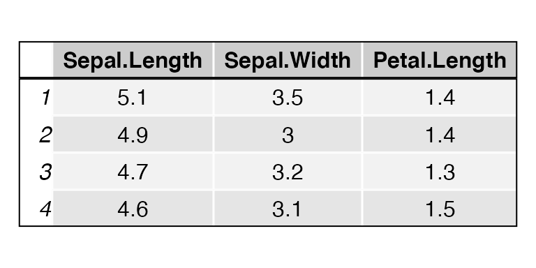
When adding line segments to separate rows and columns using
segmentsGrob, the row and column numbering scheme is the
same (it includes any row or column labels). When working with line
segments, you should keep in mind the default coordinate values for
segmentsGrob. They are x0 = 0, y0 = 0, x1 = 1, y1 = 1, all
in npc, relative to the cell(s) you are modifying, with the lower left
corner being 0,0. For clarity, we show all the arguments in these
examples. With this in mind, to add a line across the bottom of a single
cell, use:
g <- tableGrob(iris[1:4, 1:3])
g <- gtable_add_grob(g,
grobs = segmentsGrob( # line across the bottom
x0 = unit(0,"npc"),
y0 = unit(0,"npc"),
x1 = unit(1,"npc"),
y1 = unit(0,"npc"),
gp = gpar(lwd = 2.0)),
t = 3, b = 3, l = 3, r = 3)
grid.draw(g)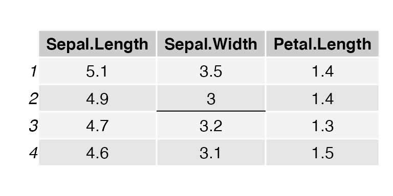
and to add a line to the left side:
g <- tableGrob(iris[1:4, 1:3])
g <- gtable_add_grob(g,
grobs = segmentsGrob( # line across the bottom
x0 = unit(0,"npc"),
y0 = unit(0,"npc"),
x1 = unit(0,"npc"),
y1 = unit(1,"npc"),
gp = gpar(lwd = 2.0)),
t = 3, b = 3, l = 3, r = 3)
grid.draw(g)
Perhaps you’d like to cross out a cell. This can be done with two
diagonal lines combined via a grobTree:
g <- tableGrob(iris[1:4, 1:3])
g <- gtable_add_grob(g,
grobs = grobTree(
segmentsGrob( # diagonal line ul -> lr
x0 = unit(0,"npc"),
y0 = unit(1,"npc"),
x1 = unit(1,"npc"),
y1 = unit(0,"npc"),
gp = gpar(lwd = 2.0)),
segmentsGrob( # diagonal line ll -> ur
x0 = unit(0,"npc"),
y0 = unit(0,"npc"),
x1 = unit(1,"npc"),
y1 = unit(1,"npc"),
gp = gpar(lwd = 2.0))),
t = 3, b = 3, l = 3, r = 3)
grid.draw(g)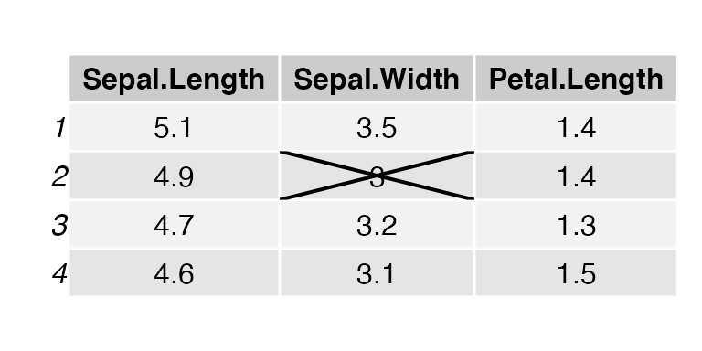
If you have many cells to decorate you can use replicate
to create create the segments. Just keep the tableGrob
numbering scheme in mind.
g <- tableGrob(head(iris), theme = ttheme_minimal())
separators <- replicate(ncol(g) - 2,
segmentsGrob(x1 = unit(0, "npc"), gp=gpar(lty=2)),
simplify=FALSE)
## add vertical lines on the left side of columns (after 2nd)
g <- gtable::gtable_add_grob(g, grobs = separators,
t = 2, b = nrow(g), l = seq_len(ncol(g)-2)+2)
grid.draw(g)Accessing existing grobs in the table
We may also access and modify the original content of individual cells, e.g. to highlight a value.
g <- tableGrob(iris[1:4, 1:3])
find_cell <- function(table, row, col, name="core-fg"){
l <- table$layout
which(l$t==row & l$l==col & l$name==name)
}
ind <- find_cell(g, 3, 2, "core-fg")
ind2 <- find_cell(g, 2, 3, "core-bg")
g$grobs[ind][[1]][["gp"]] <- gpar(fontsize=15, fontface="bold")
g$grobs[ind2][[1]][["gp"]] <- gpar(fill="darkolivegreen1", col = "darkolivegreen4", lwd=5)
grid.draw(g)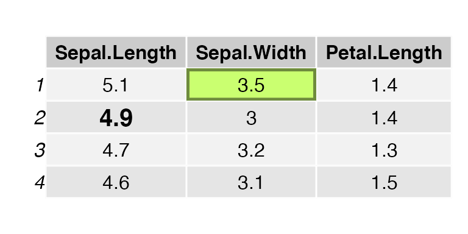
Faster tables: an alternative grid function
The tableGrob function can be very slow; unfortunately
this is the price to pay for its versatility and easier implementation.
We use individual textGrob and rectGrob
elements for each cell, instead of relying on the vectorised
implementation of these functions. The reason is practical: it is much
easier to place, measure, and customise individual grobs, than modify
the graphical parameters and positions of a single vectorised grob. An
alternative function is presented below, using this vectorised approach,
but lacking many of the customisations of tableGrob.
grid.ftable <- function(d, padding = unit(4, "mm"), ...) {
nc <- ncol(d)
nr <- nrow(d)
## character table with added row and column names
extended_matrix <- cbind(c("", rownames(d)),
rbind(colnames(d),
as.matrix(d)))
## string width and height
w <- apply(extended_matrix, 2, strwidth, "inch")
h <- apply(extended_matrix, 2, strheight, "inch")
widths <- apply(w, 2, max)
heights <- apply(h, 1, max)
padding <- convertUnit(padding, unitTo = "in", valueOnly = TRUE)
x <- cumsum(widths + padding) - 0.5 * padding
y <- cumsum(heights + padding) - padding
rg <- rectGrob(x = unit(x - widths/2, "in"),
y = unit(1, "npc") - unit(rep(y, each = nc + 1), "in"),
width = unit(widths + padding, "in"),
height = unit(heights + padding, "in"))
tg <- textGrob(c(t(extended_matrix)), x = unit(x - widths/2, "in"),
y = unit(1, "npc") - unit(rep(y, each = nc + 1), "in"),
just = "center")
g <- gTree(children = gList(rg, tg), ...,
x = x, y = y, widths = widths, heights = heights)
grid.draw(g)
invisible(g)
}
grid.newpage()
grid.ftable(head(iris, 4), gp = gpar(fill = rep(c("grey90", "grey95"), each = 6)))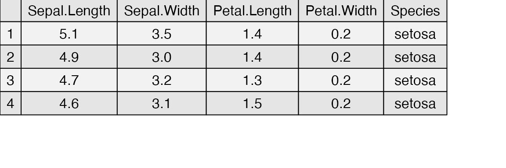